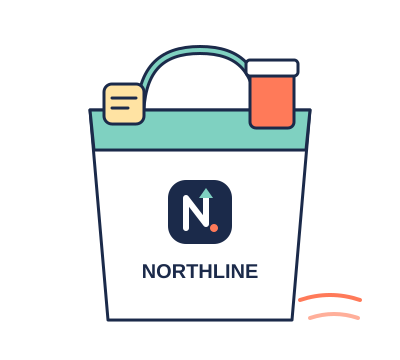
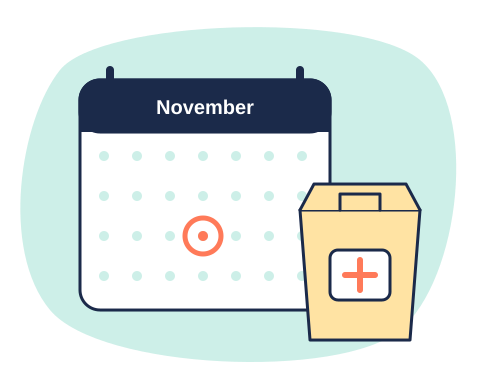
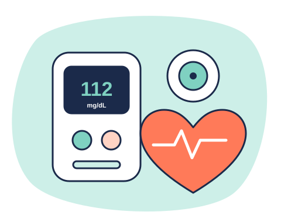
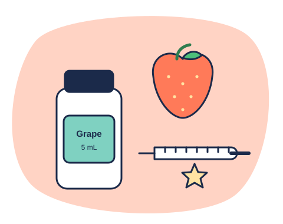
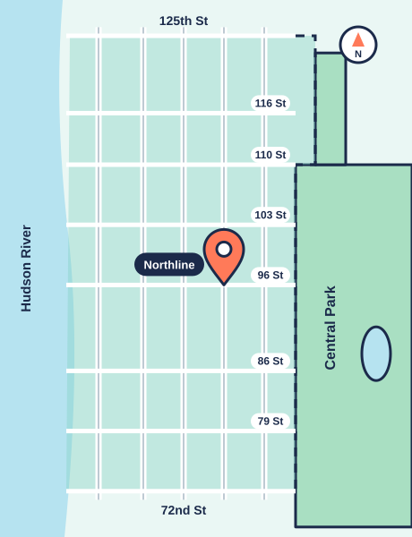

Everything we do, in plain words
Prescriptions, vaccines, health checks, family care, delivery and a front store, all at Amsterdam and 96th.

Prescriptions & refills
Most refills are ready in about 15 minutes. New prescriptions usually within the hour.

- New prescriptionsAsk your doctor to send it to Northline Pharmacy, 731 Amsterdam Ave. Paper prescriptions welcome.
- RefillsText (212) 555-0164, call (212) 555-0163, or just walk in. No app or account needed.
- Free transfersTell us where your prescriptions are now. We call them and move everything, usually the same day.
- Med syncAll your monthly medicines lined up to one pickup day, with a reminder before.
- Pill packsEvery dose sorted by day and time in tear-off strips. Free for patients on four or more daily meds.
- After-hours pickup lockersWe text you a code. Open 6am to midnight, every day.
- Compounding referralsNeed something we can’t make here? We’ll send it to a trusted compounding pharmacy nearby.
Walk-in vaccines
No appointment needed, any time we’re open. A pharmacist gives every shot in our private room. Kids 3 and up can get flu and COVID shots here.
| Vaccine | Ages | Good to know | How often |
|---|---|---|---|
| Flu | 6 months+ | Walk in. Kids 3+ at the counter; under 3, see your pediatrician. | Every fall |
| COVID-19 | 3 years+ | Updated 2026–27 shot. Walk in or book a time. | This season |
| RSV | 60+ and pregnant (32–36 wks) | One dose for most older adults. We’ll check if you qualify. | Once |
| Shingles (Shingrix) | 50+ | Two doses, 2–6 months apart. We remind you about dose two. | 2 doses |
| Pneumonia | 50+, or 19+ with some conditions | We’ll look at what you’ve had before. | Once or twice |
| Tdap | 7 years+ | Every 10 years, and in each pregnancy. | Every 10 yrs |
| HPV | 9–45 | Two or three doses depending on age. | Series |
| Travel | Varies | Typhoid, hepatitis A & B, and more. Come 4–6 weeks before your trip. | Ask us |
Ages follow New York State rules and current CDC guidance, which can change. Not sure what you’re due for? Ask us to check the NYS immunization registry.
Diabetes, heart & health checks
Dr. Oduya runs free 20-minute check-ins for anyone managing diabetes or high blood pressure. Book one, or just ask at the counter.

- A1C & glucose checksFinger-stick test, results in about five minutes.
- Blood pressure checksFree, no appointment. We’ll write the numbers down for your doctor.
- CGMs: FreeStyle Libre & DexcomWe handle the insurance paperwork and show you how to put the sensor on.
- Meters, strips, lancets & pen needlesCovered by most plans, including Medicare Part B.
- InsulinIn stock for same-day pickup or delivery. We’ll look for the lowest copay.
- HIV PrEP & PEPPrivate consult with Dr. Nair. PEP started the same day.
- Birth controlAsk about getting the pill, patch or ring without an extra doctor visit. New York lets pharmacists dispense some self-administered hormonal birth control after a short screening.
- Medication reviewsBring every bottle in a bag. We’ll check for doubles, interactions and cheaper options.
Family, kids & pets
From the first ear infection to the dog’s heartworm pills.

- Free medicine flavoringGrape, cherry, bubblegum, watermelon, and more for liquid antibiotics.
- Kids’ vaccinesFlu and COVID from age 3, Tdap from 7, HPV from 9.
- School & camp formsWe print vaccine records from the state registry while you wait.
- Dosing helpThe right syringe and a straight answer on how much, every time.
- Pet prescriptionsMany vet medicines, including flavored ones. Often cheaper than buying at the vet.
- Caregiver pickupPicking up for a parent or neighbor? We’ll set you up as an approved pickup.
Delivery zone
Free same-day delivery from 72nd to 125th Street, from the Hudson River to Central Park and Morningside Park.
| When you order | Arrives |
|---|---|
| Weekdays by 4pm | Same day by 8pm |
| Saturday by 2pm | Same day by 6pm |
| Sunday, or after cutoff | Next day |
| Cost, any order | $0 |
Refrigerated medicines go out in an insulated bag. Controlled medicines need a signature from the patient or an adult at the address. Outside the zone? Ask us; we ship by courier for a small fee.
Text for delivery
The front store
Everything you’d run out for at 8pm, in a store you can get in and out of in two minutes. FSA and HSA cards welcome.
Vitamins & supplements
Store brand and the names you know, plus prenatal and kids’ vitamins.
Allergy, cold & flu
Ask a pharmacist which one. We’re ten feet away.
First aid
Bandages, braces, wraps, ice packs, thermometers.
Baby
Formula, diapers, wipes, rash cream, saline drops.
Beauty & skin
Sunscreen, CeraVe, La Roche-Posay, Aquaphor, razors.
Home health
Blood pressure monitors, pill organizers, canes, compression socks.